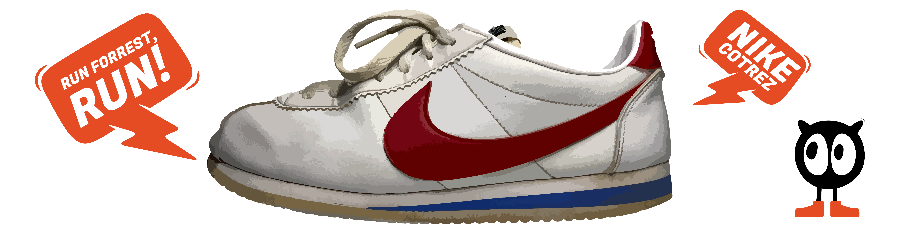
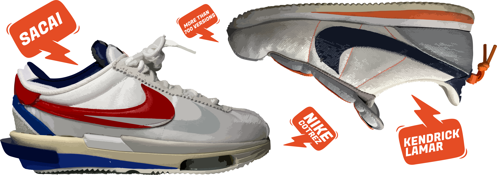

Gennem historien har Nike altid være uundgåelige når det kommer til sneakers. De har leveret den ene klassiker efter den anden. Den klassiker der har sat et helt specielt aftryk er Nikes første løbesko - nemlig Nike Cortez.
Nike Cortez er helt klart den ultimative klassiker, når det kommer til Nike, da det var den første model som de udgav. Vi skal helt tilbage til starten af i historien for at finde eventyret om Nikes første løbesko, som fik sat sit aftryk på den måde vi tænker sko.
I 1962 startede eventyret der har skabt mange klassikere. Det hele startede med at Phil Knight lånte sølle 50 dollar af sin far. Han gik sammen med hans tidligere løbetræner Bill Bowerman, og sammen startede de en virksomhed med en enkel vision: De ville importere billige sportssko fra Japan i høj kvalitet.
Nike Cortez er ikke bare en sko, det er den først sko Nike kom med, og den dag i dag er det stadig en sneaker som vi bruger til at skabe ny sneakers med.
- Torben Drejergaard - Skosamler
Skoene fra Kina solgte de fra bagenden af Phil Knights grønne Plymouth Valian. Efter det første år havde de i virksomheden tjent 8.000 dollars på at sælge sneakers. Sådan startede eventyret om det vi senere hen kender som giganten Nike, der i dag omsætter for 30 milliarder dollars årligt. Selvom de begyndte med at videresælge sko fra Kina, under navnet Blue Ribbon Average, så var det ikke nok for Bill Bowerman, der var en innovativ og iderig mand, som begyndte at udvikle på egne sko.

Med sit baggrund i løbeverdenen ville Bowerman skabe en løbesko, som skulle opfylde tre ting:
· Den skulle være let og komfortabel.
· Den skulle kunne stå distancen.
I 1968 gik han i gang med at studere andre løbesko og deres opbygning og fandt ud af at der var plads til forbedringer. Den prototype han fik skabt havde en polstret indersål, hård skumgummi i midten af hælen, mens forfoden og hælen var blødere samt en fast gummi ydersål.

Skoen blev kaldt for Nike Cortez og er skabt med det ikoniske røde swoosh logo. Cortez var den første stabile, komfortable sko til vejene, som var designet til at være den fineste langdistance sko i verden. Skoen blev et stort ikon for sneakers, da filmen Forrest Gump kom frem. Og siden hen har den været lavet i et utal af forskellige designs og collabs, hvor den altid har været tro til det design som den blev skabt med. Det er nok den største klassiker inden for sneakers verdenen.
Det er en sko, man aldrig vil glemme.